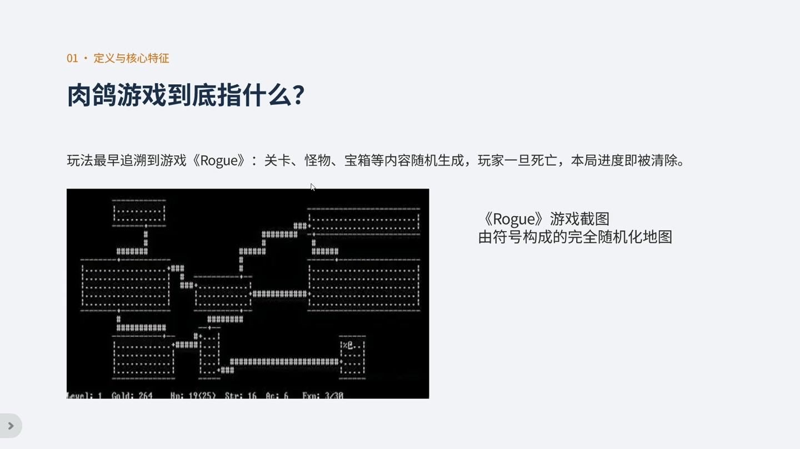
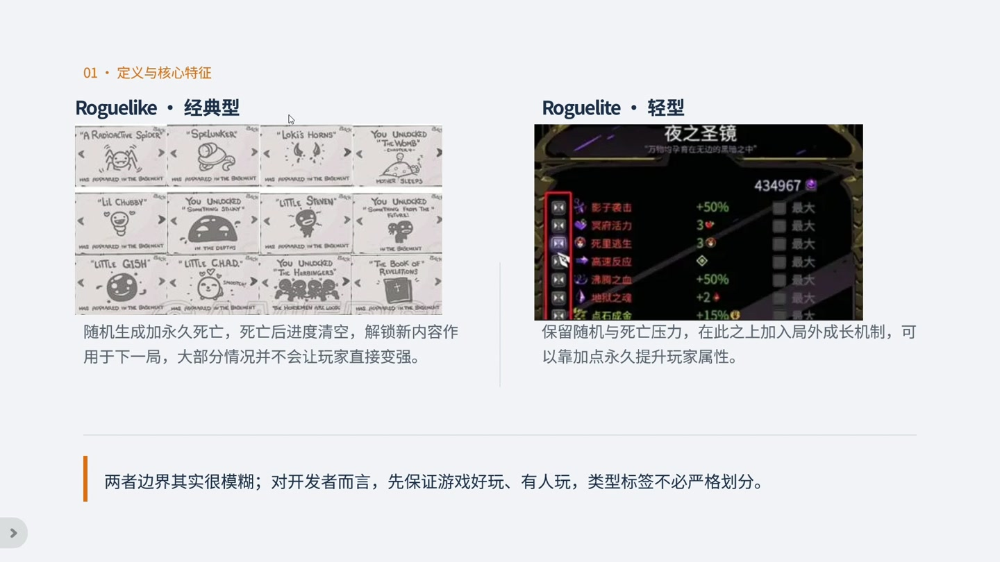

什么是肉鸽：定义与谱系
“肉鸽”这个词已经被用坏了。带随机掉宝的横版闯关叫肉鸽，死了掉装备的刷子游戏叫肉鸽，连某些抽卡手游的限时活动都自称肉鸽。术语烂掉的代价不是学术上的不严谨，而是需求无法对齐：主策说“这一版要更肉一点”，关卡策划听成“多加点随机房间”，数值策划听成“把死亡惩罚加重”，最后三件事都做了，游戏反而更难受。
本章的目标很具体：给出一套可以拿去做类型判定、也能拿去验收需求的标准。判定通过之后再谈怎么做，这是后面十章的前提。
1.1 从《Rogue》说起
肉鸽（Roguelike）这个名字直接来自 1980 年的《Rogue》。当时它的画面是纯字符：# 是墙，. 是地板，字母是怪物。但真正被别人记住并模仿的不是画面，而是三件事：
- 地牢是程序生成的。房间、走廊、怪物、宝箱，每一局都由代码重新拼出来，玩家看不到同一张图第二次。
- 死了就是死了。没有中途存档，角色一死，这一趟的所有积累清零，下次从地牢第一层重新开始。
- 资源是紧的。药水有限、卷轴有限、背包格子有限，玩家必须决定把哪一瓶留给 Boss。
后来的一批模仿者把这个结构固定下来，形成了所谓“柏林诠释”（Berlin Interpretation）那套讨论。对开发者来说，那套条款过于学术，真正有用的是从里面抽出的三条可判定特征——它们既描述了玩法，也直接对应三个设计变量。
三条可判定特征
- 随机生成：每开一局，地图、敌人、奖励至少有一项重新生成，且玩家无法预期具体结果。
- 永久死亡：单局内没有可回退的存档点，死亡即结束本局，进度不可追回。
- 资源稀缺：单局内拿到的资源总量存在上限，无法靠原地重复刷取无限变强。
三条同时成立，就是肉鸽；缺一条，玩家的体验结构就变了，硬贴标签只会让需求跑偏。

1.2 判定流程
把三特征变成可执行的判断顺序，比背定义有用。下面这套流程在项目评审里可以直接用：逐项回答，任何一项落在“否”，就不必再往下谈肉鸽的系统设计。
无限回退？"} Q1 -- "是" --> N1["不是肉鸽
存档制 / 关卡制游戏"] Q1 -- "否" --> Q2{"每局的地图、敌人、
奖励会重新生成？"} Q2 -- "否" --> N2["不是肉鸽
固定关卡的重复挑战"] Q2 -- "是" --> Q3{"单局资源可无限刷取、
靠堆数值就能过关？"} Q3 -- "是" --> N3["不是肉鸽
刷子型 ARPG / 放置"] Q3 -- "否" --> Y["是肉鸽
再判断 Roguelike / Roguelite"] style Y fill:#e9f7ec,stroke:#2e7d32,color:#14395a style N1 fill:#fdecea,stroke:#e53935,color:#14395a style N2 fill:#fdecea,stroke:#e53935,color:#14395a style N3 fill:#fdecea,stroke:#e53935,color:#14395a
拿几款游戏跑一遍这个流程，会发现它比想象中严格：
| 游戏 | 随机生成 | 永久死亡 | 资源稀缺 | 判定 |
|---|---|---|---|---|
| 《以撒的结合》 | 是（房间布局与道具池） | 是（无中途存档） | 是（每层房间与掉落固定上限） | 标准肉鸽 |
| 《杀戮尖塔》 | 是（地图节点与卡牌奖励） | 是（单局死亡即结束） | 是（能量与路线节点固定） | 标准肉鸽 |
| 《小丑牌》 | 是（牌组与小丑牌池） | 是 | 是（每关有分数目标与有限出牌次数） | 构筑型肉鸽 |
| 《暗黑破坏神》类 | 部分（掉落随机） | 否（有存档、可回城、可反复刷） | 否（可长期刷取） | 不是肉鸽 |
| 《马里奥》式闯关 | 否（关卡固定） | 部分（命数限制但可续关） | 否 | 不是肉鸽 |
1.3 Roguelike 与 Roguelite：差别只有一个变量
这两个词让无数玩家吵架，但在设计上它们的分歧点非常小。传统意义上的区分是：
| 维度 | Roguelike（经典型） | Roguelite（轻型） |
|---|---|---|
| 随机生成 | 有 | 有 |
| 永久死亡 | 有 | 有 |
| 死亡后果 | 本局清零，几乎不留任何东西 | 本局清零，但留下可积累的点数或货币 |
| 解锁内容 | 新角色、新道具、新区域、新路线，很少直接加属性 | 可以是永久属性加成：暴击、生命、伤害、弹药 |
| 玩家变强路径 | 靠玩家自己的理解与操作 | 理解、操作，外加局外数值累积 |
| 典型作品 | 《以撒的结合》《杀戮尖塔》 | 带局外天赋树的动作肉鸽、部分手机肉鸽 |
只差一个变量：死亡之后留下的东西，会不会直接改变玩家的数值。《以撒》解锁的是“能遇到什么”，玩家角色本身的强度不变；Roguelite 里打完一局拿到的点数可以点进暴击率，下一局开局就比别人强。
讲者在视频里给了一个很实在的判断：两者的边界其实很模糊，对开发者而言，先保证游戏好玩、有人玩，类型标签不必严格划分。这句话值得认真对待，原因不是分类不重要，而是分类是商店页的事，设计是体验的事。你在 Steam 上写 Roguelite 还是 Roguelike，影响的是搜索曝光；你在局外天赋树里放多少数值，影响的是玩家第二十局还愿不愿意开。

1.4 一局游戏的生命周期
后面所有系统都挂在这条链上。理解链的形状，才知道某个系统失效时，玩家的体验断在哪一环。
选角色 / 选难度 / 带初始道具"] --> B["单局开始
基础属性 + 初始装备"] B --> C["探索与战斗
地图生成、遭遇、掉落"] C --> D["构筑成型
数值成长、资源转换、路线取舍"] D --> E["终局
Boss / 目标分数 / 阶段结算"] E --> F["局外结算
解锁、点数、成就、图鉴"] F --> A C -- "死亡" --> G["本局清零"] G --> F style A fill:#e7f3ff,stroke:#007acc,color:#14395a style D fill:#fff6e8,stroke:#e65100,color:#14395a style E fill:#f5eefb,stroke:#8e44ad,color:#14395a style G fill:#fdecea,stroke:#e53935,color:#14395a
这条链上最关键的一段是 C → D：从“我捡到了几个道具”变成“我有一套打法”。绝大多数肉鸽的乐趣密度都集中在这一段，而绝大多数设计失败也发生在这里——玩家打了二十分钟，手里只有零散的好东西，凑不成任何一套能打穿终局的组合。
1.5 七套系统各自负责什么
把一局游戏拆开，能拆出七类互相咬合的系统。它们的顺序不是重要性排序，而是玩家在一局里会依次撞上的顺序：
| 系统 | 核心职责 | 失效时的典型症状 |
|---|---|---|
| 局外成长 | 让失败留下痕迹，控制内容解锁节奏 | 玩家觉得“白打了”，或反过来觉得“局内随便打都行” |
| 数值成长 | 定义变强的速度与形态，配平玩家与敌人 | 前中期太顺、后期突然打不动，或全程无压力 |
| 地图与资源生成 | 决定每一局拿到什么，是随机性的主要出口 | 开局即死局，或连续十几层看不到有用的东西 |
| 资源管理 | 把稀缺翻译成选择，把选择翻译成流派 | 玩家只会无脑选同一项，或根本算不清该选哪个 |
| 战斗系统 | 承载构筑的结果，让强度可以被感知 | 构筑再强打起来也一样，或某一套无解 |
| 剧情叙事 | 给重复游玩一个叙事理由 | 世界观只存在于开场 CG，之后完全消失 |
| 目标与成就 | 提供单局之外的追求方向 | 通关一次就卸载，没有第二目标 |
1.6 三个常见误判
“加了随机就是肉鸽”
随机只解决“每局不一样”，不解决“每局都紧张”。如果死亡可以回退、资源可以刷，随机只是让刷的过程更花时间。判定三特征必须一起满足。
“越难越肉鸽”
难度不等于永久死亡。把敌人调强、把回血删掉，得到的是一个难游戏，不是肉鸽。永久死亡的特征是不可回退，不是难以存活。
“肉鸽必须是俯视角弹幕”
《杀戮尖塔》是卡牌，《小丑牌》是牌型计算，《幸运房东》是老虎机。肉鸽描述的是一局的结构，不是视角、不是操作方式、也不是品类。
判断练习 1-1
拿你正在做的项目（或最近玩的一款游戏），逐条回答三特征，并写下判断依据。注意区分“有随机元素”和“每局重新生成”——如果一个游戏的地图是手工做的，只是敌人位置随机，那它的随机生成强度很低，重开的价值也就有限。
实现练习 1-2
给三特征各写一条可以量化验收的标准。例如：随机生成 → “同一难度下连续 20 局的房间序列重复率低于 5%”；永久死亡 → “单局内不存在可恢复的存档点，死亡后 run 状态对象被销毁”；资源稀缺 → “单局金币总收入上限为该层房间数的线性函数，不含无限刷新路径”。
判断练习 1-3
你的项目里如果已经做了局外天赋树，逐项检查它加的是什么：机制解锁、还是纯数值。统计一下比例，然后回答一个问题——如果把这套天赋树删掉，玩家的第一局体验会变差多少？如果答案是“几乎不变”，说明这套系统没有解决它该解决的问题。
本章小结
- 肉鸽的判定靠三特征，不靠标签：随机生成、永久死亡、资源稀缺。
- Roguelike 与 Roguelite 的唯一实质差别，是局外成长里有没有直接的永久数值。
- 一局游戏是“准备 → 开始 → 探索 → 成型 → 终局 → 结算”的闭环，乐趣密度集中在探索到成型这一段。
- 七套系统拆开看，才能把“不好玩”这种模糊反馈定位到具体参数。